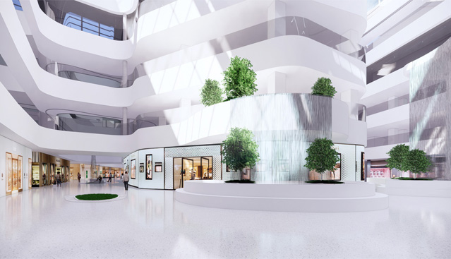
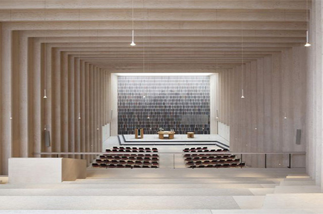
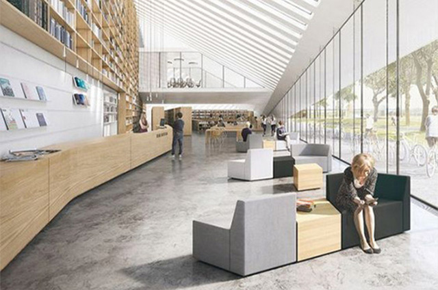
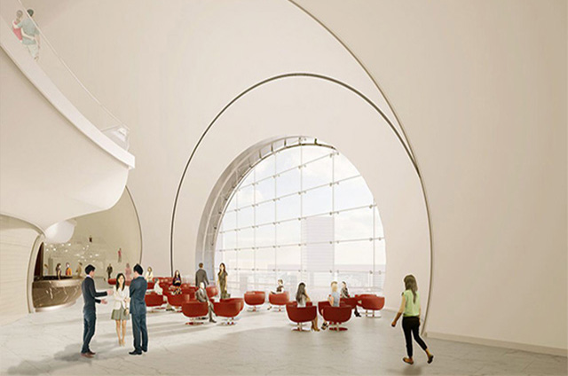

본문콘텐츠영역
bupyeong cultural
공감을 나누는 소통은 더욱 풍성한 문화를 피워낼 것입니다. 부평구문화재단은 지역의 문화예술을 지속 발전할 수 있도록 재단으로서의 역할을 다할 것 입니다.
bupyeong cultural foundationupcoming concert
arts for everyone

누구나 즐길 수 있는 공간
부평아트센터
부평아트센터는 문화예술인의 활동 공간 및 지역민들을 위한 문화기반시설을 확충하고 풍요로운 문화 부평의 발전 기틀을 마련하기 위해 출연한 복합 문화공간입니다.
자세히보기

함께 만드는 문화적 공간
공감168
부평구 생활문화 센터는 생활문화활동을 하고자 하는 지역주민 누구나 함께 소통하며 공감할 수 있는 공간입니다. 오늘부터 함께 활동에 참여해보는건 어떨까요?
자세히보기

우리집 근처에 언제나 열려있는 공연장
문화사랑방
다양한 장르의 문화예술교육프로그램을 마련하여 운영하고 있습니다. 문화사랑방은 부평구 지역주민들과 이야기를 함께 나눌 수 있는 공간으로 나아가고자 합니다.
자세히보기